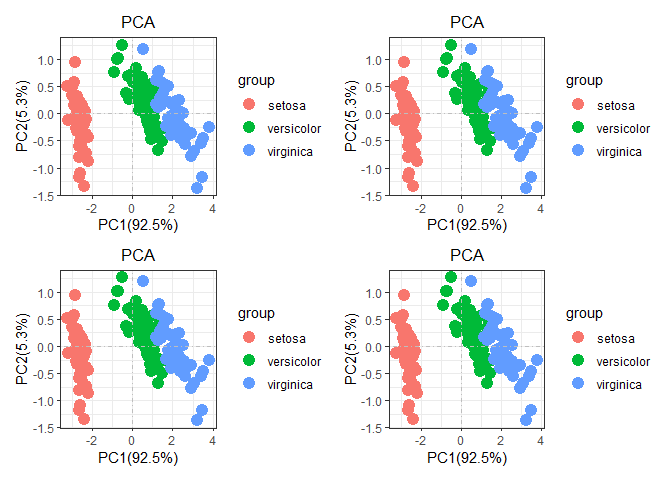
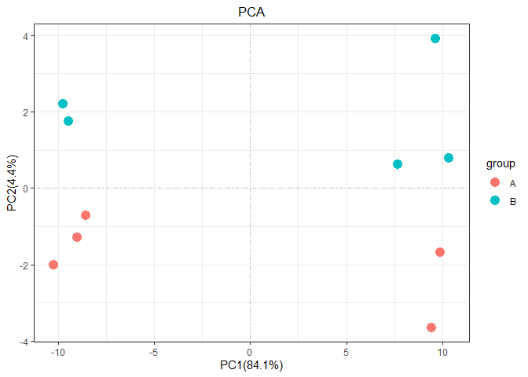

Author: Jiaxuan Wang 📝

Originally,this R package autopca was a script I used to draw PCA. PCA can analyze batch effects in experimental processing, and also analyze experimental processing factors. In my point, it is very important in checking omics data. At present, this R package Features are very few But are under active development. The basic function is already there, so I placed on github, if necessary, you can download and use it yourself.
Update
Installation
The R packages only can install the development version from GitHub with:
# install.packages("devtools")
devtools::install_github("wangjiaxuan666/autopca")Notice : if you install autopca failed , please check the R installed envirment. maybe you need install tidyverse or plyr before. IF YOU FAILED WITH ANGRY AND BOOM ERRORS. Please contact me with poormouse@126.com , I’ m sorry about what happen to you. Although it’s me, I also have to admit that this is a bug-filled R package.
Every time I use this R packages , it will spend 95% time to fix new bug! Although it will spend a little time if i use the scicpt not R packages. Automation is always very difficult because it is suitable for all kinds of situations and data type. BUT IT IS A FUN WHEN A PROBLEM NEED TO THINK
Example
Before we start the PCA analysis, we first need to tidy the input data. We can use the function pca_data_tidyto make the data clean for the next PCA analysis.It should be noted that the format of the input data is very important to determine the success of subsequent analysis.
Here, Emphasize the format of the input data. First, PCA analysis use the function stat::prcomp, Consequently the result given the every observed values’ Variance in principal components. the observed values is the prcomp data’ rownames. For example, the data iris
head(iris)
#> Sepal.Length Sepal.Width Petal.Length Petal.Width Species
#> 1 5.1 3.5 1.4 0.2 setosa
#> 2 4.9 3.0 1.4 0.2 setosa
#> 3 4.7 3.2 1.3 0.2 setosa
#> 4 4.6 3.1 1.5 0.2 setosa
#> 5 5.0 3.6 1.4 0.2 setosa
#> 6 5.4 3.9 1.7 0.4 setosathe rownames is every iris ID number, in iris, we want to demonstrate the proportion of each iris flower in terms of petal length and width and so on. That is we want, so for iris data, we just tidy a little for next analysis. Just like
library(autopca)
library(patchwork)
irisgroup <- iris[,5]
iristidy <- iris[,-5]
p1 = pca(iris[,-5],sample_group = as.data.frame(iris[,5]))
p2 = pca(iris[,-5],sample_group = as.data.frame(iris[,5]),add_ploy = "ellipse")
p3 =pca(iris[,-5],sample_group = as.data.frame(iris[,5]),add_ploy = "encircle")
p4 = pca(iris[,-5],sample_group = as.data.frame(iris[,5]),add_ploy = "polygon")
p1+p2+p3+p4 the group information is Grouping information is required, otherwise an error will be reported!
#pca(iris)As for why and how to use autopca, We need to start from the beginning.
Illustration
the autopca designed for transcriptome data, The classic transcriptome data is rownames is gene id, the column names is every observed sample. sometime it also add some annotation information in the tail. like this.
test = matrix(rnorm(200), 20, 10)
test[1:10, seq(1, 10, 2)] = test[1:10, seq(1, 10, 2)] + 3
test[11:20, seq(2, 10, 2)] = test[11:20, seq(2, 10, 2)] + 2
test[15:20, seq(2, 10, 2)] = test[15:20, seq(2, 10, 2)] + 4
colnames(test) = paste("Test", 1:10, sep = "")
rownames(test) = paste("Gene", 1:20, sep = "")
annot <- c(rep("KEGG",20))
test <- data.frame(test,annot)
head(test)
#> Test1 Test2 Test3 Test4 Test5
#> Gene1 3.551009 -1.16156606 2.494282 -2.0029050 2.311414
#> Gene2 1.035480 -0.04041621 1.426899 0.3231355 5.311818
#> Gene3 2.879613 -0.43164532 3.184171 0.9168861 2.936128
#> Gene4 1.036891 0.89441199 1.732773 0.1373383 2.836823
#> Gene5 3.003990 0.26097851 3.162482 -0.1221119 3.988460
#> Gene6 1.887346 -0.25826115 2.852820 -0.4903453 2.902215
#> Test6 Test7 Test8 Test9 Test10 annot
#> Gene1 -1.4127155 4.553807 1.03955522 4.625260 0.07899018 KEGG
#> Gene2 -1.2624575 2.846070 -1.32304364 1.759938 -1.13853462 KEGG
#> Gene3 1.8682265 3.243656 -1.08284848 4.177493 -1.32925053 KEGG
#> Gene4 0.8707386 3.448355 1.27892896 3.631018 0.64786600 KEGG
#> Gene5 0.1661776 2.714665 0.02441847 2.118239 1.99553166 KEGG
#> Gene6 -1.2972927 2.302292 -1.23645148 2.509957 -0.07415683 KEGGThrough the above steps, we obtained a classic transcriptome data frame. NOW WE explain the sample variance in PC. So we need tidy the data by the functionpca_data_tidy.
pca_data_tidy(as.data.frame(test)) -> test_tidy
#> ... Notice: the input data is a data frame not a tibble
#> ... Problem: the input data vaule in every column must be numberic value
#> ... Problem: the error because the character type value in data
#> ... Successed! the pca data save in the objectNEXT, we can use the tidy data to analysis, just like this
as.data.frame(c(rep("A",5),rep("B",5))) -> group
rownames(group) <- colnames(test[,-11])
colnames(group) <- "group"
head(group)
#> group
#> Test1 A
#> Test2 A
#> Test3 A
#> Test4 A
#> Test5 A
#> Test6 B
pca(test_tidy,sample_group = group)
But pca function not only that, It supports regular matching characters to replace the names of sample or group. When the sample names is “CK-1_fokm, CK-2_fokm,” and so on , It will be very useful.
#pca(data = re,# the data didn't exist,just a example to display the parameter
# display_sample = TRUE,
# rename = "replace",
# str_sample = "_.*",
# str_group = "-\\d$",
# add_ploy = TRUE)ALL parameters explain :
Usage:
pca(
data = data,
center = T,
retx = T,
scale = FALSE,
display_sample = FALSE,
rename = c("diy", "replace"),
sample_group = NULL,
str_sample = NULL,
str_group = "-.*",
add_ploy = FALSE
)Arguments
data:iput data form the function 'pca_data_tidy'
center:the prcomp param, detail see '?prcomp'
retx:the prcomp param, detail see '?prcomp'
scale:the prcomp param, detail see '?prcomp'
display_sample:if TRUE will add the text labels on points.
rename：the method for change the sample and group names, two argment can choose, "diy" is for the creat a data for name,"replace" is use regexp to replace or change the name
sample_group：a data for change the sample and group name, the rownames is sample and the first column is group
str_sample:the 'regexp' for the sample name to become the target name
str_group:the 'regexp' for the group name to become the target name
add_ploy:if TRUE will add the polygon on points.Of course, as a fan of tidyverse, all function in autopca also support tibble data input. If there are any questions and suggestions in use, welcome questions and suggestions
2021-1-2